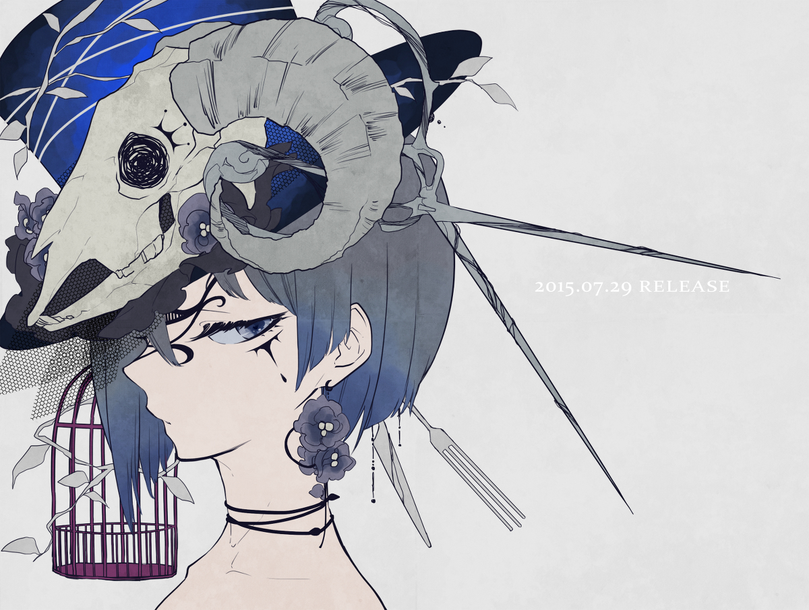
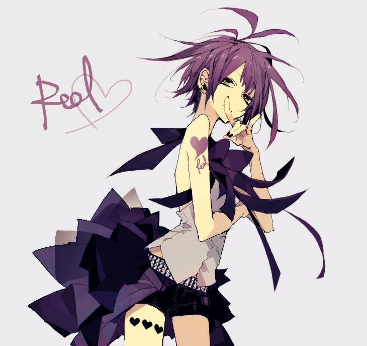
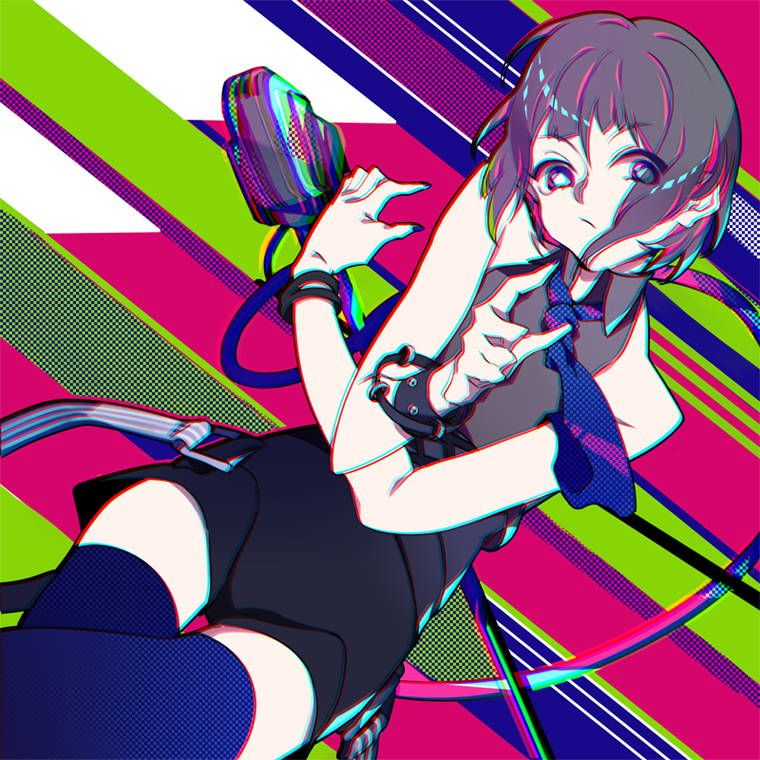
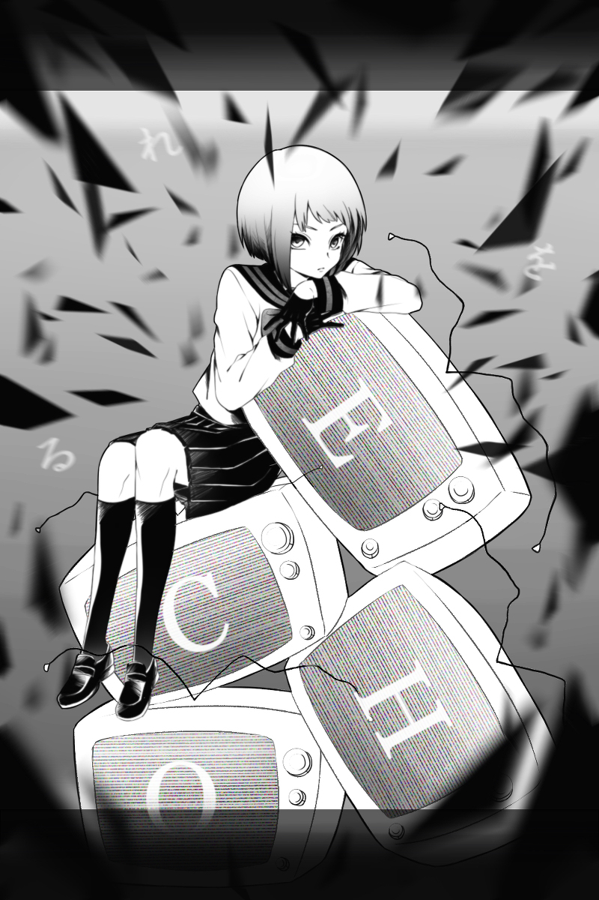
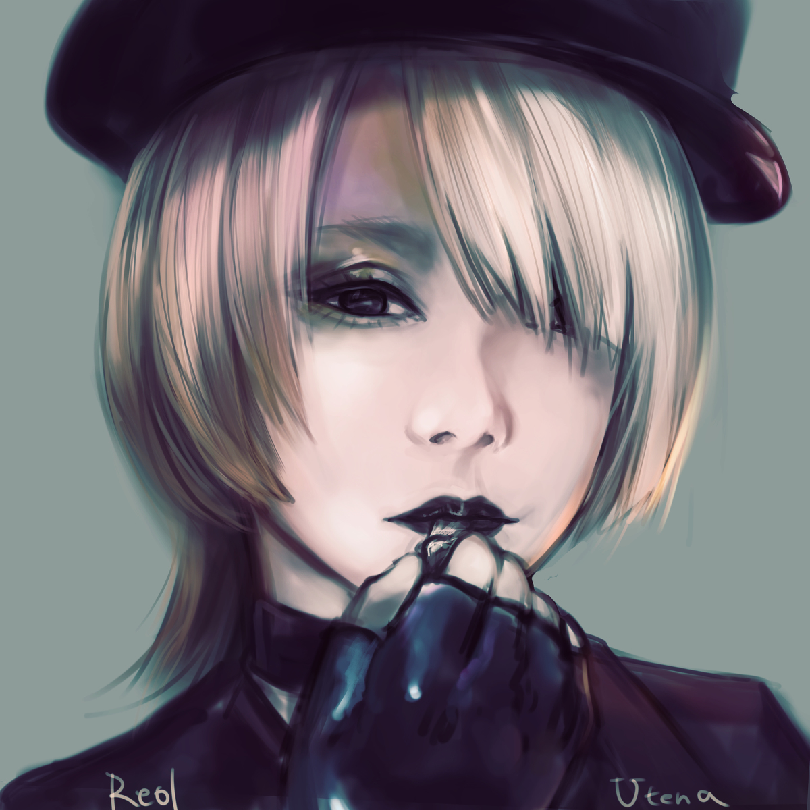
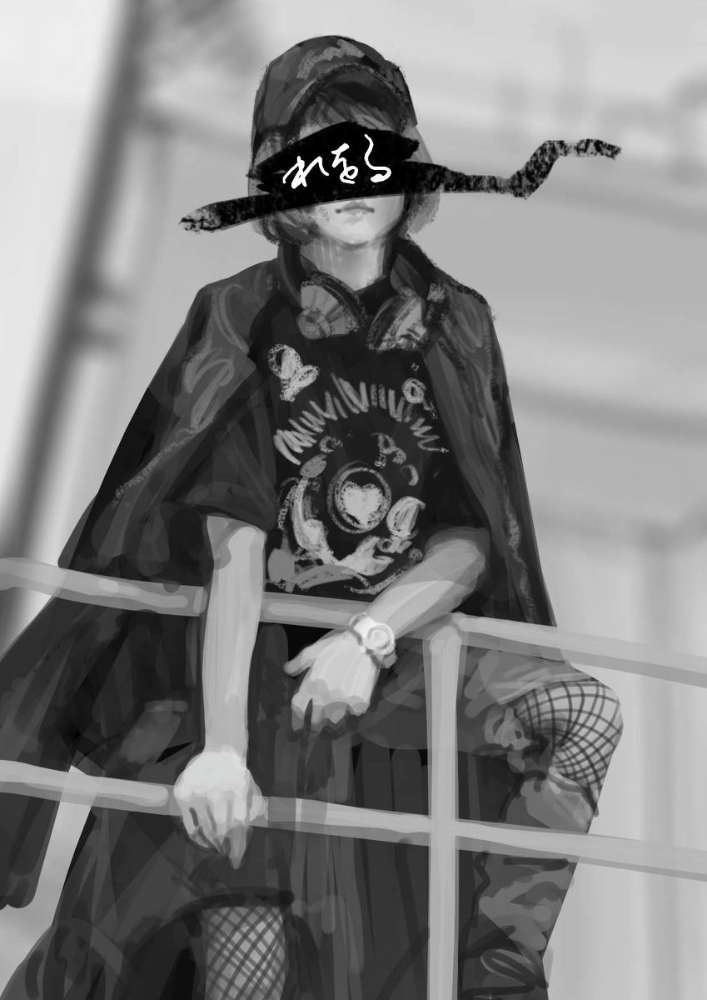
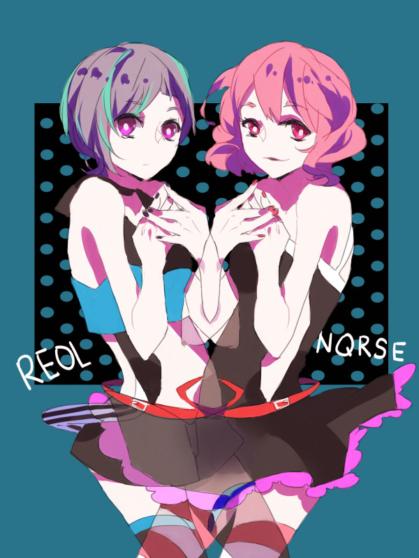
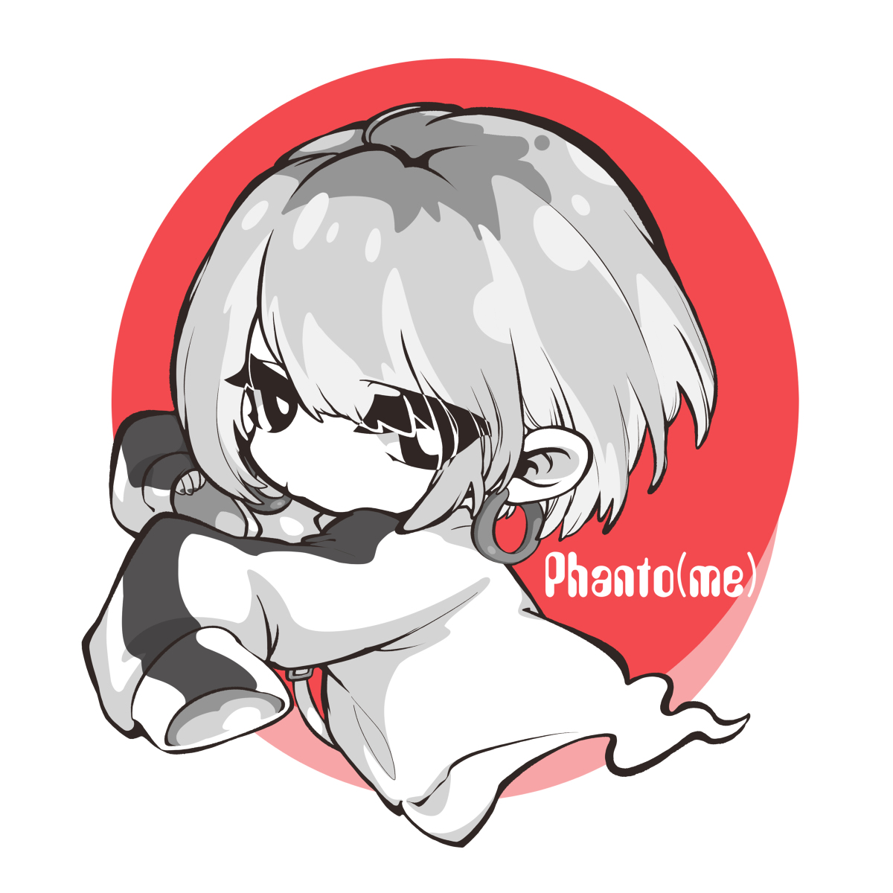

Career History
In late 2012, Reol began uploading original songs and cover songs to video sharing sites Nico Nico Douga and YouTube. On August 17, 2014, Reol co-released the compilation album titled No Title+ with music arranger GigaP, video director Okiku, and art producer Key, under the group name Anyosupenyosuyaya. The album contains vocals by Vocaloid virtual singers such as Hatsune Miku, GUMI and Megurine Luka, the album was released through Japanese label Celo Project. Reol has since released a version with her own vocals, titled No Title-. In 2014, Reol released the single "LUVORATORRRRRY!" in collaboration with Nqrse, GigaP and Okiku. The music video for the song has amassed over 62 million views on YouTube, making it their most popular release.
Illustrated by 葉月幹@Pixiv
On July 29, 2015, Reol independently released her first studio album titled Gokusaishiki, which reached the top ten on the Oricon Albums Chart. Later in 2015, Reol, along with GigaP & Okiku, signed with Toy's Factory under the unit name REOL. On August 18, REOL made their first public appearance in the music video for their single "Give me a break Stop now". They released their debut studio album titled 'Sigma' on October 19, 2016, which reached number 8 on the Oricon weekly Albums Chart. In August 2017, REOL announced that they would be disbanding after their last live performances. On October 11, 2017, REOL released their final project, which was an EP entitled Endless EP. In January 2018, Reol signed to Victor Entertainment. On March 5 she released a music video for the song titled "エンド" as the single for her solo debut EP. Reol released her first EP titled Kyokoushu on March 14. Reol released the singles "Saisaki" and "Sairen" in July and August respectively before the announcement of her first studio album Jijitsujo (事実上). Jijitsujo was released on October 17, and a music video for the third single "Gekihaku" was released on December 19. Reol was featured on TeddyLoid's Silent Planet:Infinity album on the song "Winners". Reol later went on her first tour dubbed "MADE IN FACTION" around Japan, and later into China. In 2019, she released the Bunmei EP on March 20, and music videos for "Utena" and "Lost Paradise" respectively. She has gone on her second Japanese tour, named "Reol Secret Live". "Phanto(me)" was released on July 24 as a single. On 22 January 2020, Reol released her second full album Kinjitou (金字塔). The album has a total of 11 songs and includes the digital singles: Phanto(me), HYPE MODE and 1LDK. On September 27, 2020, she, as the first Japanese female artist, was elected in "Artist on the Rise". On July 29, the music video for "The Sixth Sense (第六感)" was released, a promotional song for Boat Race 2020, which also featured the group Tokyo Gegegay, who also sang in the YouTube version. On November 4, she released a music video titled "Q?", in collaboration with GigaP.
Fan Arts
- 
Illustrated by 望月けい@pixiv
- 
Illustrated by あさ@pixiv
- 
Illustrated by アポカド@pixiv
- 
Illustrated by Yun@pixiv
- 
Illustrated by 京極 閏@pixiv
- 
Illustrated by アズキ@pixiv
- 
Illustrated by Inuiikun@pixiv
- 
Illustrated by imo@pixiv